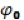
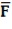
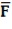
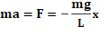

ОПРЕДЕЛЕНИЕ
УСКОРЕНИЯ СВОБОДНОГО ПАДЕНИЯ
ПРИ
ПОМОЩИ МАТЕМАТИЧЕСКОГО МАЯТНИКА
Краткая теория.
В данной лабораторной работе ускорение свободного падения определяется с
использованием закономерностей колебательного движения математического
маятника.
1.
Уравнение
и основные характеристики колебательного процесса
Колебание - это любой периодически
меняющийся процесс. Существует множество различных видов периодических
колебаний, простейшими из которых являются гармонические колебания – колебания,
при которых физическая (или любая другая) величина изменяется с течением
времени по синусоидальному или косинусоидальному
закону. Гармонические колебания – это идеализация, занимающая среди всех других
колебаний особое место, что обусловлено двумя причинами:
1) колебания, встречающиеся
в природе и технике, часто имеют характер, близкий к гармоническим колебаниям.
2) любое негармоническое
колебание можно представить в виде суммы (наложений) различных гармонических
колебаний.
В
общем случае (для произвольной физической величины X) кинематическое уравнение
гармонических колебаний имеет вид:
, (1)
или , (2) где:
X - смещение (отклонение) колеблющейся точки от положения равновесия в
момент времени t.
А – амплитуда колебаний, это величина, определяющая максимальное
отклонение колеблющейся точки от положения равновесия (A = |Xmax|). Амплитуда и
смещение в системе СИ измеряются в метрах.
w
- циклическая частота, величина,
показывающая число полных колебаний, происходящих в течении
2π секунд. В системе СИ циклическая частота измеряется в с-1.
– фаза
колебаний. Величина, определяющая величину смещения Х колеблющейся точки от
положения равновесия в данный момент времени t.
 – начальная
фаза, величина, определяющая величину смещения Х колеблющейся точки от
положения равновесия в начальный момент времени (t=0). Начальная фаза и фаза колебаний
измеряются в угловых единицах, т. е. в градусах или в радианах (в долях π).
К
числу основных характеристик колебательного процесса относят период
и частоту колебаний.
Период
колебаний (T) – время одного полного колебания
(промежуток времени между двумя последовательными прохождениями колеблющейся
точки через одно и то же положение в одном и том же направлении). Период в
системе СИ измеряется в секундах.
Частота
колебаний ( ). Величина, показывающая число полных
колебаний за единицу времени. В системе СИ частота измеряется в герцах
(герц- одно колебание за секунду).
). Величина, показывающая число полных
колебаний за единицу времени. В системе СИ частота измеряется в герцах
(герц- одно колебание за секунду).
Циклическая
частота связана с периодом и частотой колебаний следующими соотношениями:
;
Используя
одно из кинематических уравнений гармонических колебаний, например уравнение
(1), найдём кинематические характеристики этих колебаний – скорость и ускорение.
Скорость
V
– это первая производная по времени от смещения Х: (3),
где величина – амплитуда скорости гармонических колебаний.
Ускорение
гармонических колебаний a определится как первая
производная по времени от скорости гармонических колебаний, или вторая
производная по времени от смещения
(4),
где
– амплитуда ускорения
Из
формул (1), (2) и (3) видно, что при гармонических колебаниях смещение,
скорость и ускорение характеризуется одинаковой циклической частотой и,
следовательно, периодом. Фазы колебаний указанных величин различны: колебание
скорости опережает колебание смещения по фазе на (по времени на ), колебание
ускорения опережает колебание смещения по фазе на π, (по времени на ).
Зная
массу m
колеблющейся частицы (материальная точка) и её ускорение, найдём силу, под
действием которой совершаются гармонические колебания. Согласно второму закону
Ньютона, эта сила равна:
(5), где
k=mw2
– коэффициент пропорциональности является постоянной величиной для данного
осциллятора (осциллятор - физическая система, совершающая колебания).
Из
уравнения (5) видно, что сила, вызывающая гармоническое колебание,
пропорциональна смещению Х и направлена против смещения, на что указывает знак
минус. Эта сила стремится возвратить колеблющуюся точку в положение равновесия,
поэтому её называют возвращающей силой.
Такой силой, например, может быть сила
упругости, возникающая при малых деформациях любого вида, которая, согласно
закону Гука, пропорциональна деформации (смещению) DХ и противоположна ему по знаку.
Возвращающие силы могут иметь и иную, не
упругую природу. В этих случаях они называются квазиупругими силами (т. е. «как бы подобны упругим
силам»). Коэффициент k,
определяющий значение силы, вызывающей смещение, называют коэффициентом
возвращаемой силы. Как силы упругости, так и квазиупругие
силы являются внутренними силами колеблющейся системы. Следовательно, гармонические колебания происходят под
действием внутренних упругих сил, или на них похожих, квазиупругих
сил. Колебания, происходящие только под действием внутренних сил,
называются свободными (или собственными).
Для
гармонических колебаний выполняется закон сохранения механической энергии,
согласно которого полная энергия Е гармонического осциллятора остаётся
постоянной. Энергия гармонических колебаний рассчитывается по формуле:
- формулу получить
самостоятельно.
2.
Математический маятник, период его
колебаний
Примером
механических гармонических колебаний под действием квазиупругих
сил является колебание математического маятника. Математическим маятником
называют идеализированную систему, состоящую из невесомой и нерастяжимой нити,
на которой подвешена масса, сосредоточенная в одной точке. Достаточно хорошим
приближением к математическому маятнику служит небольшой тяжелый шарик,
подвешенный на длинной тонкой нерастяжимой нити (рис 1). На шарик маятника
всегда действует две силы: сила тяжести и сила натяжения нити . В положении
равновесия (свободно висящий маятник) сумма указанных сил равна нулю. На шарик
маятника, отклонённого от положения равновесия на угол ϕ, будет действовать
возвращающая сила , равная
результирующей двух сил: силы тяжести (g
–сила ускорение свободного падения) и силы натяжения нити .
Под
действием этой возвращающей силы , маятник начнет
ускоренно двигаться от точки D
к точке S
(положению равновесия). В точке S
величина силы  равна нулю, но так как маятник обладает массой
m
и к моменту прохождения точки S
имеет скорость V,
то он по инерции пройдёт эту точку. При дальнейшем движении маятника по дуге
его скорость будет понижаться вследствие того, что направление силы  изменится и будет противоположно направлению
движения маятника. В конечной точке движения маятник остановится и сразу же
начнет движение к точке S.
таким образом, маятник будет совершать под действием силы
равна нулю, но так как маятник обладает массой
m
и к моменту прохождения точки S
имеет скорость V,
то он по инерции пройдёт эту точку. При дальнейшем движении маятника по дуге
его скорость будет понижаться вследствие того, что направление силы  изменится и будет противоположно направлению
движения маятника. В конечной точке движения маятник остановится и сразу же
начнет движение к точке S.
таким образом, маятник будет совершать под действием силы  колебательные движения. Если на маятник не
действуют силы трения, то он будет совершать колебательные движения бесконечно
долго. Из рисунка 1 видно, что величина силы связана с величиной силы тяжести ,
соотношением:
колебательные движения. Если на маятник не
действуют силы трения, то он будет совершать колебательные движения бесконечно
долго. Из рисунка 1 видно, что величина силы связана с величиной силы тяжести ,
соотношением:
(6)
Зависимость
возвращающей силы от смещения, характеризуемого углом ϕ, в уравнении (6),
нелинейная, следовательно, и колебания маятника будут не гармоническими.
Однако, в случае малых колебаний маятника, когда угол отклонения ϕ столь мал
(до 50), что Sinϕ=, возвращающая
сила пропорциональна углу ϕ и в этом случае (при малых отклонениях) можно считать, что колебания маятника
происходят под действием квазиупругой силы, и,
следовательно, колебания являются гармоническими. Малым углам отклонения ϕ
соответствует и малая величина смещения Х.
Подставив
в уравнение (6) вместо Sin,
величину и, учитывая, что при малых углах отклонения ϕ,
вектор силы практически совпадает с отрезком смещения Х,
но направлен противоположно отклонению, окончательно можно записать
возвращающую (квазиупругую) силу в виде:
(7)
Следовательно,
при малых углах отклонения ϕ, на маятник будет действовать квазиупругая
сила, и он будет совершать гармонические колебания. Найдём период таких
гармонических колебаний математического маятника. Для этого запишем второй
закон Ньютона в скалярном виде:
 (8)
где a = – ускорение колеблющегося шарика
математического маятника. Сократив в уравнении (8) массу, получим
уравнение в виде:
или (9)
Так
как в этих уравнениях величины g
и L
всегда положительные, то их отношение можно приравнять к квадрату некоторой
величины w2:
(10)
После
подстановки (10) в уравнении (9), получим:
(11)
Выражение
(16) является дифференциальным
уравнением гармонических колебаний. Частным решением этого уравнения
является по выбору или функция , или функция .
С
учетом соотношения (10) следует, что математический маятник при малых углах
отклонения совершает гармонические колебания с частотой, равной:
(12)
или
с периодом:
(13).
3.
Ускорение свободного падения
Закономерности
движения планет и их спутников, падения тел на Землю, колебания маятников и
тому подобные явления свидетельствуют о существовании сил взаимного притяжения
между телами. Эти силы подчиняются закону
всемирного тяготения (гравитации), установленному Ньютоном, согласно
которого, между всякими двумя материальными точками действует сила , прямо
пропорциональная произведению масс этих точек (m1 и m2) и обратно
пропорциональная квадрату расстояния r между ними:
(14)
В формуле (14)
коэффициент пропорциональности G=6,67*10-11
м3/кгс2 одинаков для всех тел в природе и называется
гравитационной постоянной или постоянной тяготения.
Сила
FT
тяготения к Земле каждого, находящегося на ней или вблизи неё тела, направлена
к центру Земли и численно равна:
(15),
где
m
и M
– массы тела и Земли, R-расстояние
от центра тяжести тела до центра Земли.
Любое
взаимодействие между реальными телами осуществляется через то или иное
физическое поле. Гравитационное взаимодействие осуществляется посредством
гравитационного поля. Это поле проявляет себя в том, что на помещенное в него
другое тело действует сила тяготения (гравитации). Гравитационное поле
характеризуется двумя важными величинами – напряженностью и потенциалом
гравитационного поля Y.
Напряженность
гравитационного поля – это силовая характеристика поля, показывающая, какая
сила в данной точке поля действует на тело единичной массы . Если пренебречь
центробежной силой инерции, обусловленной суточным вращением Земли, то вблизи
земной поверхности напряженность гравитационного поля можно считать равной по
величине и направлению ускорению свободного падения т.е.
. Потенциал
гравитационного поля – это энергетическая характеристика поля, скалярная
величина, определяющая потенциальную энергию единичной массы тела, находящегося
в данной точке гравитационного поля .
Одним
из проявлений силы всемирного тяготения является сила тяжести. Движение тела под действием только одной силы тяжести
называют свободным падением, а
ускорение, приобретаемое телом под действием этой силы, называется ускорением свободного падения.
Ускорение
свободного падения в данной точке пространства одинаково для всех тел и не
зависит ни от материала тела, ни от его размеров. Сила тяжести, как и сила
гравитации, обратно пропорциональна квадрату расстояния R2 от центра Земли
до центра тяжести тела. Кроме того, нешарообразность
формы Земли (её форма представляет эллипсоид вращения, или сфероид), а также
действие на тела центробежной силы инерции за счет суточного вращения Земли,
приводит к зависимости ускорения свободного падения, а
следовательно и силы тяжести, от географической широты места. Вблизи
земной поверхности максимальное ускорение имеют тела на полюсах( ) и минимальное на
экваторе (). На широте 45о
оно равно и называется «стандартным ускорением».
4.
Рабочая
формула
Соотношение
(13) можно использовать для опытного определения ускорения свободного падения g. После возведения
в квадрат уравнения (13), получим выражение для расчета ускорения
свободного падения:
(14)
Расчет ускорения g можно произвести двумя способами. Первый – это
непосредственно по формуле (14), подставив в неё L и T. Второй – графический. Для этого
способа необходимо измерить период колебания T при различных длинах нити L, а затем построить график
зависимости T2
от L.
Получится прямая линия с коэффициентом наклона С. Определяя наклон
C
из экспериментального графика (рис.2), можно рассчитать величину g:
(15)